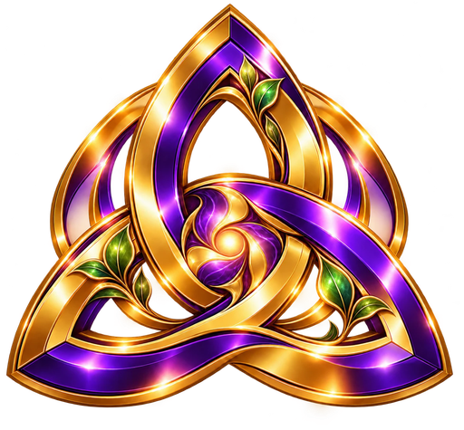

Real
Фото 3:4
Имя Фамилия
Режиссёр

Твоя реальная жизнь становится кино, игрой и творчеством.

Твой персонаж ждёт тебя там, где ты его оставил.
Код приходит от TRIZNES Assistant по /profile.
Нет кода? Начать с Аполлона →